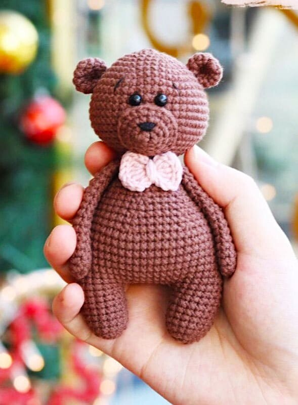
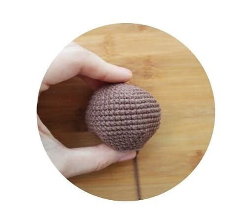
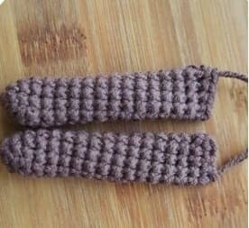
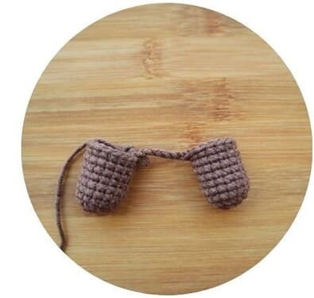
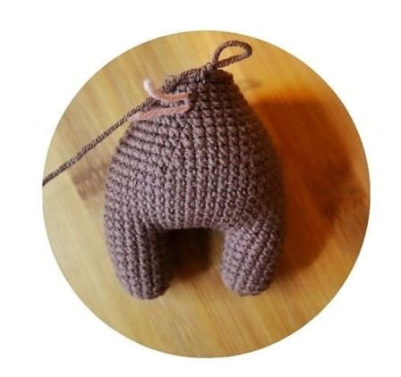
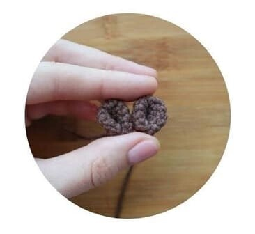
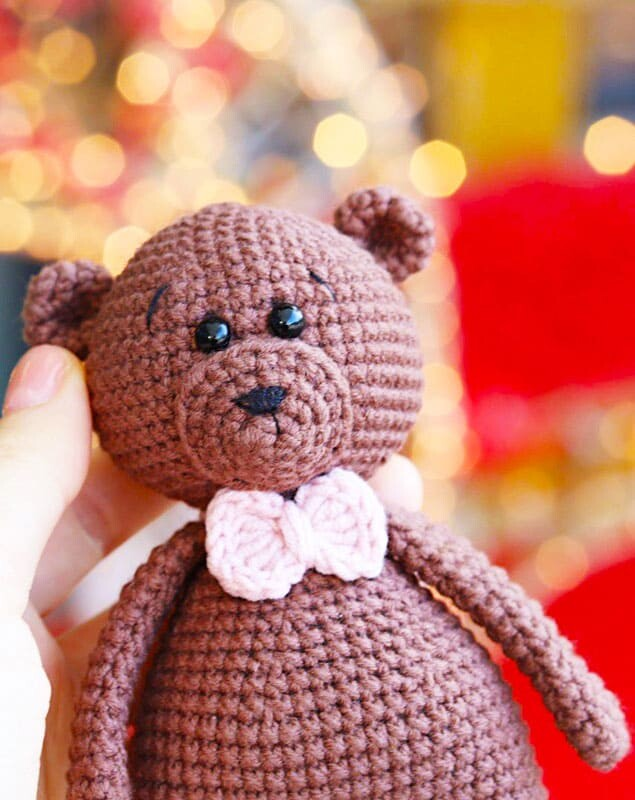

Materials
We are gonna be making a bear plush in this tutorial, but you can literally make any animal with this technique!
Here are some abbreviations you should know before you start:
- MR: Magic ring
- ch: Chain
- sc: Single crochet
- dc: Double crochet
- hdc: Half double crochet
- trc: Treble crochet
- inc: Increase
- dec: Decrease
- st: Stitch
- slst: Slip stitch
- FLO : Crochet into front loops only
- BLO : Crochet into back loops only

Here are some materials that you'll need to make your own plush:
- Yarn
- A crochet hook of similar size
- Scissors or a yarn cutter
- Stuffing
- Needles
- Safety eyes
- Embroidery thread (optional)
The head
- 6 sc in MR
- (1 sc, inc)*3 (9)
- inc*9 (18)
- (2 sc, inc)*6 (24)
- (3 sc, inc)*6 (30)
- (4 sc, inc)*6 (36)
- (5 sc, inc)*6 (42)
- (6 sc, inc)*6 (48)
- 48 sc (repeat for 7 rows)
- (6 sc, dec)*6 (42)
- (5 sc, dec)*6 (36)
- (4 sc, dec)*6 (30)
- (3 sc, dec)*6 (24)
- (2 sc, dec)*6 (18)
We fasten the yarn, cut it, leaving a long tip for sewing to the body.
We set the eyes between the 10th and 11th row (3 sc between the eyes).
We fill our head with filler.

Arms (2 pcs)
- 6 sc in MR
- (1 sc, inc)*3 (9)
- 9 sc (repeat for 14 rows)
Fold and crochet 4 ch on both sides of the arm, cut the yarn.

Legs (2 pcs)
- 8 sc in MR
- inc*8 (16)
- 16 sc (repeat for rows)
At the first leg we fix and cut the yarn,
from the second we continue to crochet 6ch and attach the second leg slst.

The body
- 16 sc on the first leg, 6 sc on the jumper, 16 sc on the second leg, 6 sc on the jumper (44)
- (16 sc, inc, 4 sc, inc)*2 (48)
- 48 sc (7 rows)
- (6 sc, dec)*6 (42)
- 42 sc
- (5 sc, dec)*6 (36)
- 36 sc
- (4 sc, dec)*6 (30)
- 30 sc
- (3 sc, dec)*6 (24)
- 24 sc
- (2 sc, dec)*6 (18)
- 2 sc, 4 sc with a arm, 4 sc, 4 sc with a arm, 4 sc (18)

Ears (2 pcs)
- 6 sc in MR
- inc*6 (12)
- 12 sc (3 rows)
Fold in half and again in half and sew on both sides,
cut the yarn, leaving the tip for sewing.

Assemble time!
And we're done! Now you just have to assemble all your parts with a needle or your crochet hook!
you can also embroider some facial features or add safety eyes!
